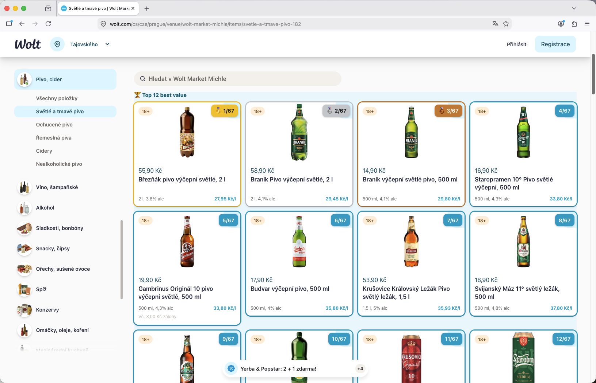
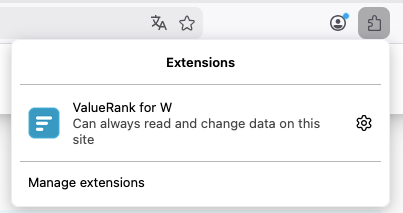
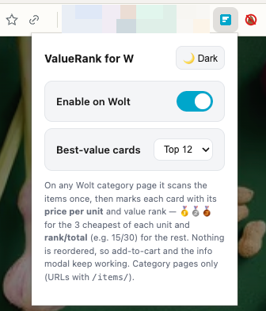

See the real price per unit on Wolt — instantly, in Firefox.
ValueRank for W ranks products on wolt.com and wolt.cz by price per kg, litre, or piece, and stamps the math right on each card — so the best value always stands out. Same engine as the Chrome build, ported to run natively in Firefox.
Also available for Chrome / Comet.

What it does
A small badge and a Top list — nothing else on the page is touched.
Per-unit badges
Every card is stamped with its price per kg, litre, or piece — computed the same way Wolt itself does it.
Best-value ranking
Medals for the top 3 in each unit type, plus rank/total (e.g. 12/45) for everything else.
Top best-value strip
A clickable strip of the cheapest items sits above the grid, split per unit type when a category mixes kg and piece pricing.
Handles messy pricing
Parses localized prices and quantities — 68,90 Kč, 5.99 €, 500 g, 1,5 l, multipacks — and normalizes them.
Nothing gets reordered
Add-to-cart, filters, and the info modal keep working exactly as before — only badges and the Top strip are added.
Simple settings
Toggle it on or off, choose how many best-value cards to show, and switch between light and dark popup themes.
Screenshots
Real category pages from Wolt Market, with the extension running.


Install (temporary / developer)
Not yet on addons.mozilla.org — load it temporarily in the meantime.
Open about:debugging#/runtime/this-firefox.
Click Load Temporary Add-on…
Select the manifest.json file inside the wolt-unit-price-sorter/firefox folder.
Open a Wolt Market category page. Badges and the Top strip appear automatically.
Temporary add-ons are removed when Firefox restarts. See
README-FIREFOX.md for how to package and
sign a permanent build with web-ext.
Privacy
Everything runs locally in your browser. The extension collects no data, has no servers, no analytics, and no tracking. It only runs on wolt.com and wolt.cz.
- storage — saves your on/off state, Top-N count, and theme choice locally.
- Toolbar icon state — a small background script checks the active tab's address to light up the icon only on Wolt pages; it does not read page content.
- No remote code. No data is sold, shared, or used for anything beyond the extension's single purpose.